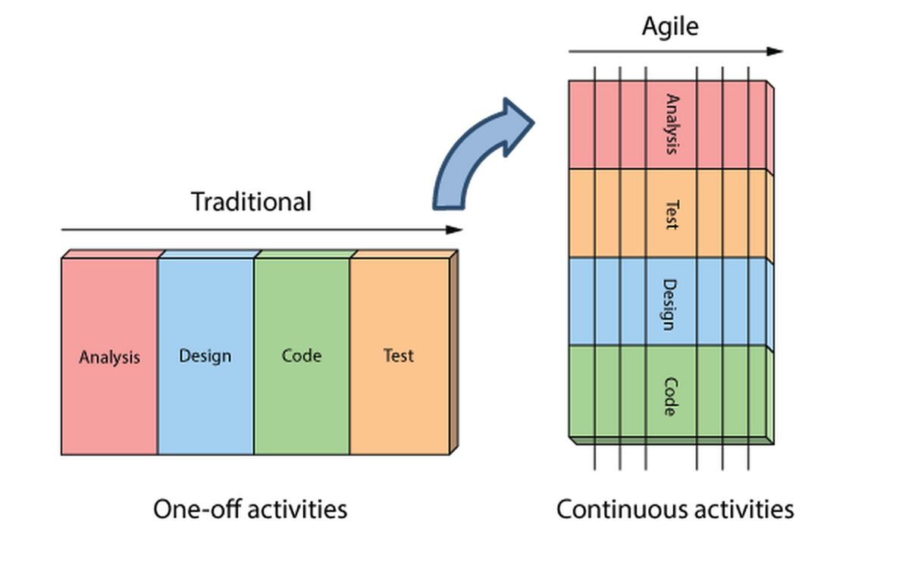

Created by Emily Porta for Hackeryou
A philosophy of iterative (not all at once) software delivery, focusing on small, estimated and prioritized features executed in iterations that allow for change.
Everything happens at once: testing, coding, delivery, design, etc.
Waterfall = plan-driven, Agile = adaptive
An agile methodology, aka some specifics on how to do agile day to day.
A prioritized list of items needed to "complete" a project. Constantly changing, updated, refined. Managed by the PO.
The items from the Product Backlog that have been brought into the current sprint, and the plan for delivering and realizing the Sprint Goal. The team can adapt said backlog throughout the sprint.
The result of completing the sprint, in a "done" state, ready for release.
The PO is the voice of the customer. Their primary role in Scrum is to create and prioritize the product backlog (list of things we need to do).
It's the team's job to execute and attempt to deliver a potentially shippable group of features each sprint (a "product increment"). They're cross-functional and a group of equals.
Keeps everything going: removes impediments to work, source of knowledge for scrum process, servant leader. Leads all ceremonies.
Inspect and adapt the process. Lots of common formats around a central theme of what worked, what didn't, what should we do to change the latter.
In two parts. Usually first day of the sprint. Should be very short if you keep up with backlog refinement.
Forecast != contract
Only the team decides how much work they can take on, only the PO decides what is highest priority
So, as a Hackeryou grad how will this impact you?
Three main ways:
As a member of a Scrum team, you'll be expected to work to understand the value of the ceremonies, to participate, to communicate, and to take on work whenever you can do it. (i.e. generally work is not pre-assigned to any one person).
You will be a part of the "how" discussion with your team, help estimate work, you will have to follow the Definition of Done, help break down stories, etc.
How to be a Scrum Master's best friend: communicate! Give updates, ask questions, contribute to team discussions.